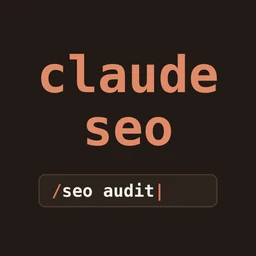

01
Faire l'audit complet de ton site
Une commande, et tu obtiens la liste des problèmes (pages lentes, images lourdes, descriptions manquantes, liens cassés…) triée du plus urgent au moins urgent.
/seo audit→17 agents→Plan d'action

Un plugin gratuit pour Claude Code : tu donnes l'adresse de ton site, jusqu'à 17 agents l'analysent en même temps, et tu repars avec un plan d'action trié par urgence.

Le SEO, c'est tout ce qui aide ton site à sortir dans Google : des pages rapides, bien décrites, faciles à explorer, avec un contenu utile. Claude SEO est un plugin pour Claude Code, l'agent d'Anthropic qui travaille dans un terminal. Tu tapes /seo audit suivi de l'adresse de ton site : Claude repère le type de site (boutique, site local, blog…), puis jusqu'à 17 agents spécialisés l'analysent en même temps (technique, contenu, images, données structurées, vitesse, SEO local, visibilité dans les IA). En 10 à 15 minutes, tu obtiens un plan d'action classé par priorité, et chaque conseil explique pourquoi il compte et comment vérifier que la correction a marché. Les rapports sont enregistrés sur ton ordinateur (Markdown, et PDF en option).
Dans Claude Code : /plugin marketplace add AgriciDaniel/claude-seo, puis /plugin install claude-seo@agricidaniel-claude-seo, puis /seo setup (prépare Python et un navigateur Chromium isolés).
RecommandéClone le dépôt, lis le script, puis lance install.sh (Mac, Linux) ou install.ps1 (Windows). Demande Claude Code 1.0.33 ou plus récent et Python 3.11 à 3.14.
Pour vérifier avantPas prévu pour l'appli Claude classique : le plugin a besoin de Claude Code, de Python et d'un navigateur local pour analyser les pages.
Non prévuUne commande, et tu obtiens la liste des problèmes (pages lentes, images lourdes, descriptions manquantes, liens cassés…) triée du plus urgent au moins urgent.
Pour un commerce ou un artisan : /seo local vérifie la cohérence de ton nom, adresse et téléphone, ta fiche d'établissement et les signaux qui comptent dans Google Maps.
/seo geo regarde si ChatGPT, Perplexity ou les aperçus IA de Google peuvent facilement reprendre et citer tes pages, et ce qu'il faut changer pour ça.
/seo schema repère les données structurées de ta page, signale les erreurs et écrit le code JSON-LD prêt à coller (commerce, article, produit, FAQ…).
/seo drift enregistre une photo de ton site, puis compare après chaque mise à jour pour repérer ce qui a cassé (balises, titres, vitesse).
Le projet a été lancé en février 2026 par Agrici Daniel et a dépassé 29 000 étoiles en neuf mois. Il est mis à jour presque chaque jour et couvert par des milliers de tests automatiques. Ses résultats affichés (trafic de son propre site) sont publiés par l'auteur lui-même.
Plus de 540 commits sur la branche principale, dernière modification le 15 novembre 2026, version 2.6.2 ; une quinzaine de tickets ouverts seulement.
Environ 29 200 étoiles et 3 700 forks sur GitHub en novembre 2026 ; une communauté gratuite et une communauté payante sur Skool.
Rapports enregistrés chez toi, aucun pistage, aucun appel à un service tiers sans extension ; mais le contenu des pages analysées passe par Claude.
Version publique gratuite sous licence MIT ; une version privée avec les nouveautés en avant-première est réservée aux membres payants de la communauté de l'auteur, et Claude Code est payant.
Neuf mois d'existence et des changements très fréquents ; l'auteur publie ses propres chiffres de résultats, sans étude indépendante.
Comment on note : 5 critères notés sur 5, vérifiés sur GitHub, le README, la politique de confidentialité (PRIVACY.md) et le code du dépôt le 15 novembre 2026. La note sur 10 est la moyenne ramenée sur 10.
Bon pour : Un audit complet en un quart d'heure, avec un plan d'action clair
Bon pour : Suivre ses positions, ses mots-clés et ses concurrents au quotidien
Bon pour : Les liens entrants (backlinks) et l'analyse des concurrents
Bon pour : Explorer un site page par page pour l'audit technique
Bon pour : Voir ton vrai trafic Google et les pages indexées
Le contenu des pages analysées est envoyé à Claude : n'audite pas de pages privées ou réservées à des clients connectés sans réfléchir à ce que tu partages.

Chaque vidéo RepoPop t'explique un dépôt GitHub utile en moins d'une minute, avec son kit comme celui-ci.